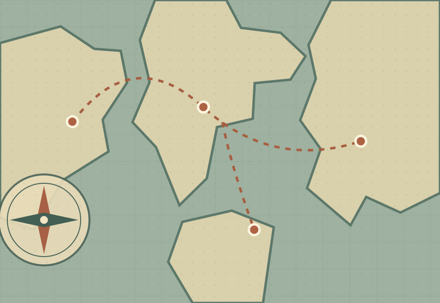
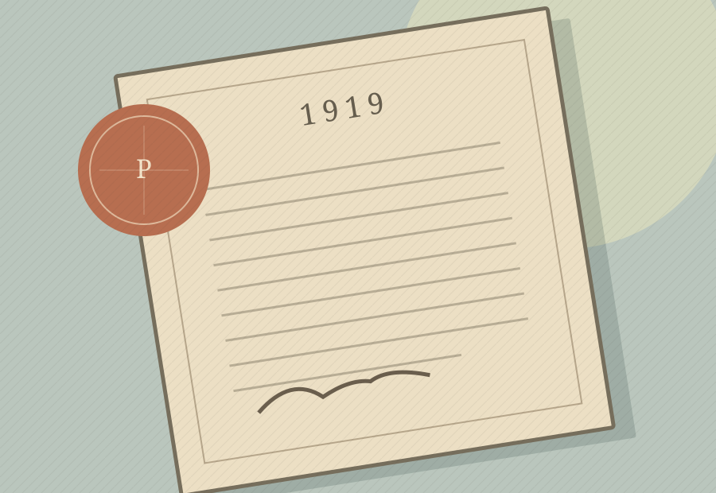

The Republic and the problem of power
Rome built a republic to restrain ambition. Its expansion made that ambition harder and harder to contain.
Read the essayAn independent history journal exploring empires and ideas, people and places, and the surprising ways yesterday continues to shape tomorrow.
Original essays
waiting to be discovered
Original essays on the forces, figures, and ideas that made the world.
Rome built a republic to restrain ambition. Its expansion made that ambition harder and harder to contain.
Read the essay
Maps & empiresA map does more than describe a place. Throughout history, it has helped people claim, order, and imagine it.
Read the essay
Modern historyThe peacemakers after World War I set out to create a new order. Their hopes and compromises reshaped international politics.
Read the essayHistory never stops making headlines. A few fascinating reads from publications and researchers we admire, gathered in one place.
CURATED LINKS · NOVEMBER 2026Hand-picked stories, not an automatically updating news feed.
The New York Times · ScienceThis is a personal notebook for thinking across centuries. Find out what the journal is about and make yourself at home.